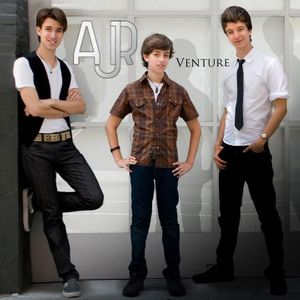
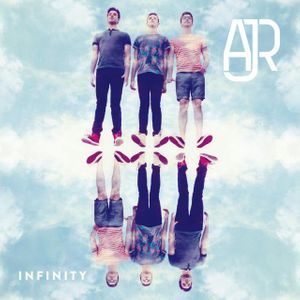

The following albums is what i would call the "Extra Albums" either because most of the songs inside were repackged with larger albums (hence why you may see some duplicates) or if you can no longer find a copy of the albums because they have been "deleted" by the artists.
AJR | Extra Albums
. Carbonmade.com. https://johnloren.carbonmade.com/")
Extra Albums
Born and Bred (2010)
. Genius. https://genius.com/albums/Ajr/Born-and-bred")
| No. | Name |
|---|---|
| 1 | Go On Take a Chance |
| 2 | Nothing in My Way |
| 3 | I Want You Back |
| 4 | If You Were Me |
| 5 | Drift Away |
| 6 | You Can't Hurry Love |
| 7 | Piano in Your Pocket |
| 8 | My Very First Love Song |
| 9 | Chelsea Streets |
| 10 | Hallelujah |
| 11 | I've Just Seen a Face |
| 12 | Country House |
| 13 | I'm a Believer |
| 14 | Rainow Man |
| 15 | Classic |
Released: March 20, 2010
This album consists of both original songs by AJR as well as covers done.
This release was pulled from all streaming platforms before the release of the “I’m Ready” EP. It’s considered to be lost by most AJR fans. This album has 15 songs, most of which is considered missing by the fanbase. [4]
Venture (2010)
| No. | Name |
|---|---|
| 1 | 212 |
| 2 | Snow |
| 3 | 50 States Away |
| 4 | Classic |
| 5 | A Moment Like This |
| 6 | Boomtown |
| 7 | Nothing in My Way |
| 8 | Go On Take a Chance |
| 9 | The Bigwhig |
| 10 | Imagine |
Released: September 12, 2010
Second full release by AJR.
This release was pulled from all streaming platforms before the release of the “I’m Ready” EP. It’s considered to be lost by most AJR fans. This album has 10 songs, most of which is considered missing. [7]
AJR (2012)
| No. | Name |
|---|---|
| 1 | More Than Friends |
| 2 | The World is a Marble Heart |
| 3 | We the Cool Kids |
| 4 | Snowglobe |
Released: July 18, 2012
AJR – EP is a 2012 EP released by AJR.
The album is currently considered lost media but has been found. [2]
I'm Ready (2013)
. Genius. https://genius.com/albums/Ajr/Im-ready")
| No. | Name |
|---|---|
| 1 | I'm Ready |
| 2 | Woody Allen |
| 3 | Growing Old on Bleecker Street |
| 4 | AfterHours |
| 5 | Buy You a Rose |
Released: December 20, 2013
First official EP from AJR, released on December 20th, 2013. It was first labelled as the “6Foot1” EP before rebranding was done. [5]
Infinity (2014)
| No. | Name |
|---|---|
| 1 | Infinity |
| 2 | Alice by the Hudson |
| 3 | Pitchfork Kids |
| 4 | 3 am |
Released: September 23, 2014 [6]
What Everyone's Thinking (2016)
| No. | Name |
|---|---|
| 1 | Come Hang Out |
| 2 | Weak |
| 3 | Turning Out |
| 4 | I'm Not Famous |
| 5 | No Grass Today |
Released: September 16, 2016
This is the third official EP by the band of brothers, AJR. They wanted these songs to be about what everyone’s thinking, but no one is saying, hence the title. [8]
More Info
As of the moment the 4th AJR album is to be released somewhere in 2021. The songs in this album include "Bang", "Bummerland", and "My Play"(to be released soon). This album been described by band members as being the most extreme album so far in terms of emotions. Jack Met of the band explains it as “The angriest, the saddest, but honestly the most jovial too.” [3]
Sources
AJR. (2018). AJR - Come Hang Out (Official Video) [YouTube Video]. In YouTube. https://www.youtube.com/watch?v=ZxLc6P2Ii5Q
AJR by AJR. (2012). Genius. https://genius.com/albums/Ajr/Ajr
AJR4* by AJR. (2020). Genius. https://genius.com/albums/Ajr/Ajr4
Born and Bred by AJR. (2010). Genius. https://genius.com/albums/Ajr/Born-and-bred
I’m Ready by AJR. (2013). Genius. https://genius.com/albums/Ajr/Im-ready
Infinity by AJR. (2014). Genius. https://genius.com/albums/Ajr/Infinity
Venture by AJR. (2010). Genius. https://genius.com/albums/Ajr/Venture
What Everyone’s Thinking by AJR. (2016). Genius. https://genius.com/albums/Ajr/What-everyones-thinking